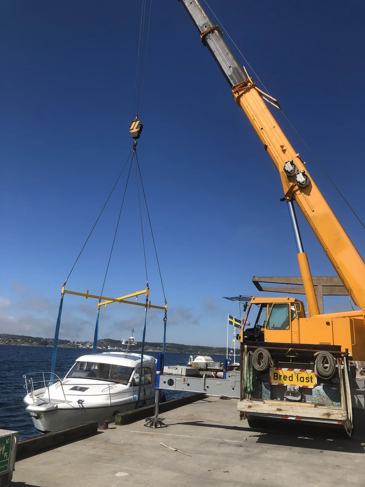
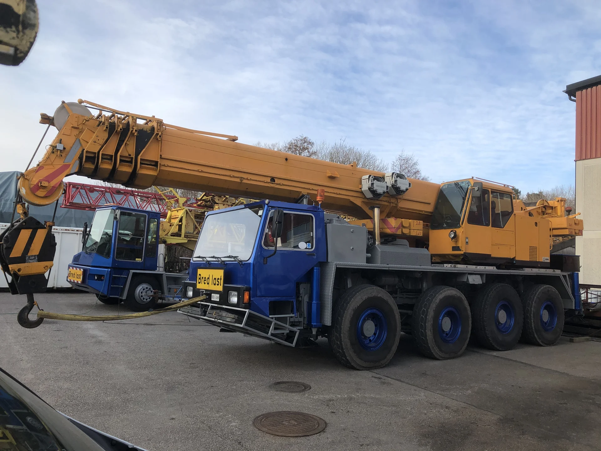

Svensk Bygg & Marin · Orust
På land.
Till sjöss.
På din sida.
Byggnation, renovering, båtservice och lyft. Samma personliga kontakt, från första frågan till nästa steg.
Svensk Bygg & Marin
Mycket kunnande.
En kontakt.
Från ett nytt kök till en nyckelfärdig villa. Från båtservice till säsongens sista lyft.
Stellan Tendahl driver Svensk Bygg & Marin på västra Orust. Tillsammans med våra samarbetspartners kan vi ofta ta hand om flera delar av samma projekt.
Lär känna ossVad behöver du hjälp med?
Två världar.
Samma hantverk.
Bygg och marin möts hos oss. Välj det som passar dina planer och läs mer om arbetet vi gör.

Mobilkran & lyft
Stora lyft.
Genomtänkta upplägg.
Husmontage, båtar, betongelement och mer. Berätta vad som ska lyftas och hur platsen ser ut.
- Mobilkran
- 70 ton
- Räckvidd upp till
- 40 meter
Kapaciteten för ett visst lyft beror på räckvidd och uppställning. Vi går igenom förutsättningarna för uppdraget.

Ur vårt bildarkiv
Arbetet får
tala för sig.
Hus under uppförande, detaljer som blir färdiga och båtar på väg in eller ut ur säsongen.
Ett kundomdöme
Publicerat på Reco
”Bra service och löste
många problem åt oss”
Henrik Morgan I R · 18 mars 2026
Läs omdömet på RecoReco har inte kunnat kontrollera kundrelationen.
Ditt nästa steg
Dina planer.
Vårt nästa samtal.
Kontakta Stellan för byggnation, renovering, båtservice, vinterförvaring eller lyft på Orust.